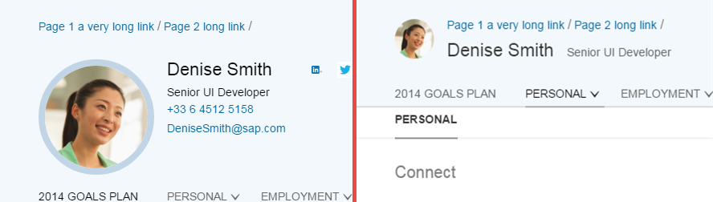

Object Page Scrolling
The object page offers different ways to handle specific scrolling scenarios.
General Scrolling Behavior
By default, the headerContent of the ObjectPage snaps to the headerTitle when scrolling a longer section. Some of the contents of the headerContent move to the headerTitle and thus always remain visible. You can see an example of this behavior in the screenshot below.

Object Page Header: Expanded (left) / Snapped (right)This behavior can be altered. Setting the property alwaysShowContentHeader to
true will prevent the headerContent from
snapping.
Selected Section
As the user scrolls through the sections, the currently scrolled section is internally set to the selectedSection association of ObjectPageLayout. The app can also modify its value:
-
The app can set which section the page should scroll to upon initial display:
<ObjectPageLayout id="ObjectPageLayout" selectedSection="mySectionId"> <sections> <ObjectPageSection title="Payroll" id="mySectionId"> <subSections> <ObjectPageSubSection title="sub payroll title"> <blocks> <myNameSpace:myBlock/> <myNameSpace:myBlock/> <myNameSpace:myBlock/> </blocks> </ObjectPageSubSection> </subSections> </ObjectPageSection> </sections> </ObjectPageLayout>
-
The app can also change the currently scrolled section at runtime:
//navigate to a specific section on open this.oObjectPageLayout = this.getView().byId("ObjectPageLayout"); this.oTargetSection = this.getView().byId("empl"); this.oObjectPageLayout.setSelectedSection(this.oTargetSection)